Product page, five layouts
These are five new layouts for the All Products page on apexsxskin.com. Each one keeps the site's own header, footer and cart, and lists all 28 products with the same category, price and sort filters. Only the product display changes, so open each one on your laptop and phone and pick one or a mix.
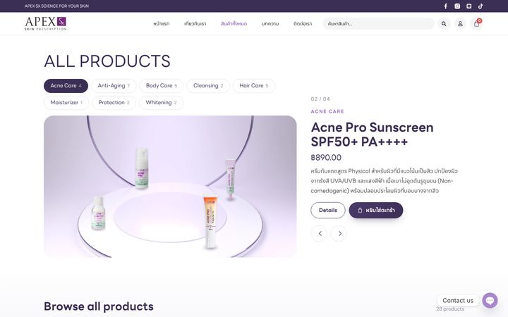
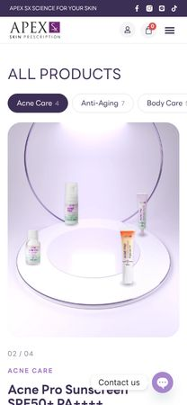
The Doctor Younger showroom, split by category so each ring holds 1 to 7 products. The ring turns slowly on its own and slows as each product reaches the front, and dragging or tapping a product brings it round.
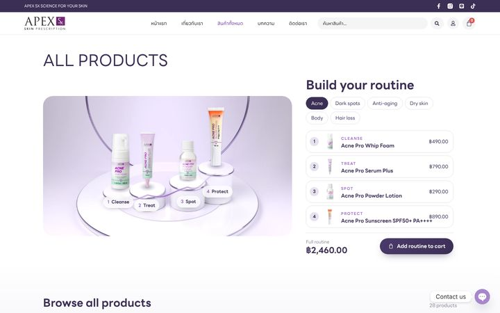
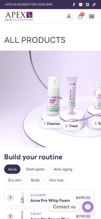
Pick a concern (acne, dark spots, anti-aging, dry skin, body, hair loss) and four pedestals on the platform show the routine in the order it's used, with the total and one button that adds all four.
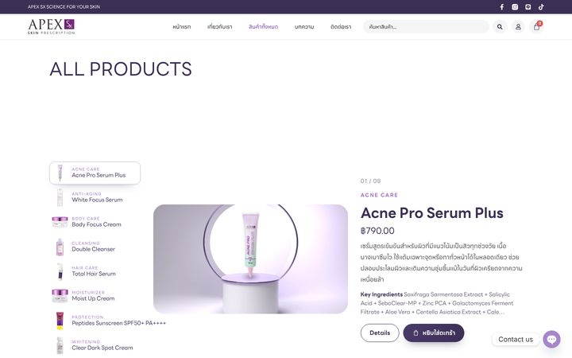
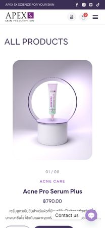
One product from each category takes the plinth in turn as you scroll, with its price, description and key ingredients beside it. The list on the left jumps straight to any of them.
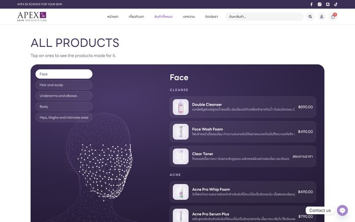
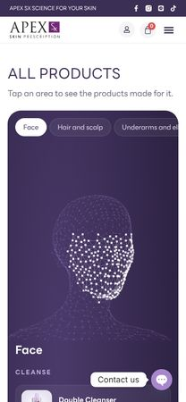
The mesh figure from the Apex Surgery site. Tapping the face, hair, underarms, body or hips lights that area and lists the products made for it, grouped by concern on the face.
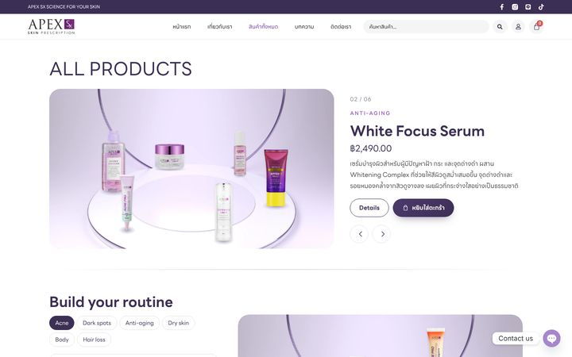
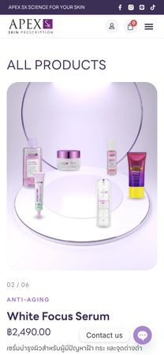
Six featured products on the ring at the top, the routine on the same platform under it, then every product. The ring gives the showroom feel your mentor liked, and the routine sells whole sets.
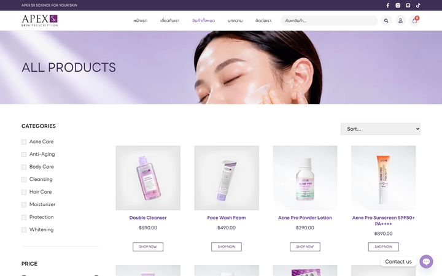
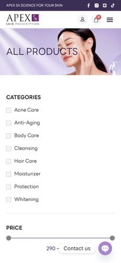
The live page as it was on 22 October 2026, saved with its own styles. Its second page of products loads from the live site, so it only works online.
The stages were built and rendered in Blender, and the products are cut out from the photos on each product page. Tell me which version to take forward.